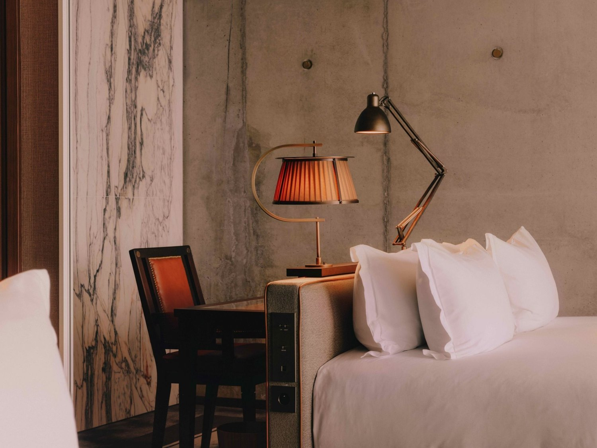
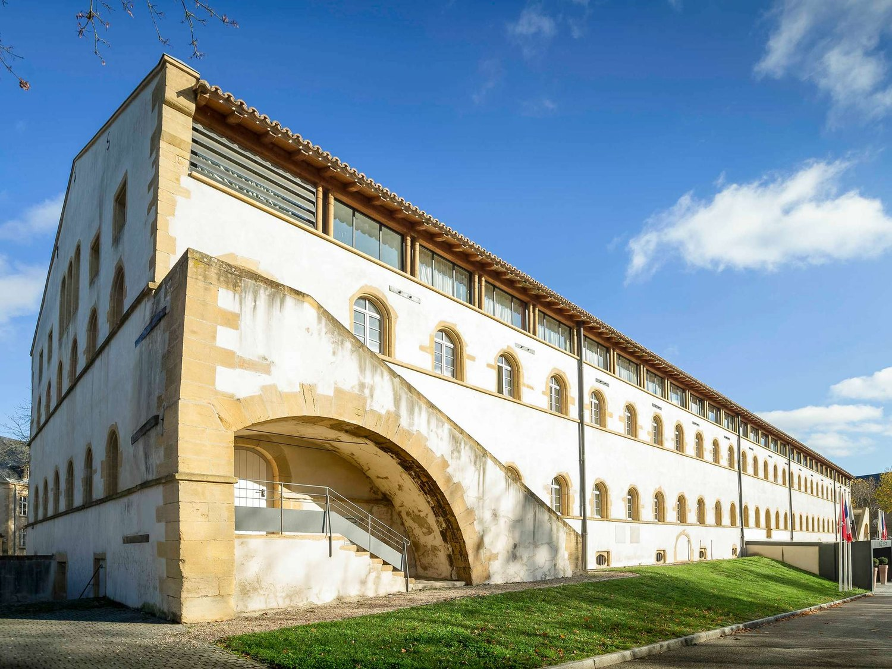
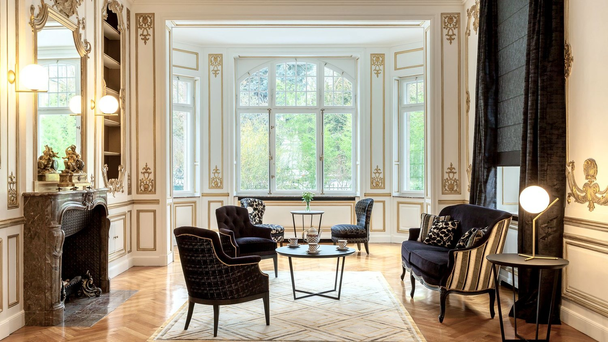
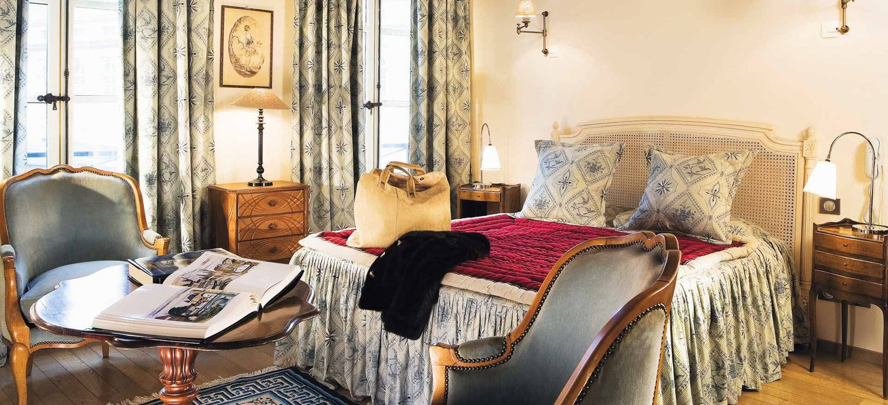

Meilleurs hôtels à Metz : 8 adresses classées en 2026
Une maison lorraine du XIXe siècle posée au sommet d'un monolithe de neuf étages,
une forteresse de 1559 devenue hôtel, et pas un seul 5 étoiles dans toute la ville.
Par Swann Bertaud, rédacteur hôtellerie de luxe✺Publié le 2 septembre 2026✺14 min de lecture
La maison lorraine perchée au sommet des neuf étages de la Maison Heler.
Photo : site officiel de l'établissement.
L'essentielTrois adresses, trois logiques de séjour
Maison Heler, 9,1/10 : le geste architectural le plus fort de
l'hôtellerie française récente, une maison lorraine du XIXe posée sur un
monolithe brutaliste de neuf étages, signé Philippe Starck, ouvert en 2025.
La Citadelle MGallery, 8,7/10 : une bâtisse militaire
construite à partir de 1559 sur ordre d'Henri II, devenue hôtel en 2005. Le
meilleur ancrage lorrain du classement.
Villa Camoufle, 8,4/10 : une maison de 1903 restaurée en 2018,
trois chambres seulement, réservée aux adultes, face à la tour Camoufle.
Ce n'est pas un hôtel, c'est une maison d'hôtes.
Metz n'a aucun 5 étoiles, et ce classement doit commencer par là. La ville
a en revanche reçu en 2025 l'un des objets hôteliers les plus discutés de France, et elle
possède un patrimoine militaire que peu de villes peuvent transformer en chambres. Nous
classons huit adresses par le Score LMHS sur 10 et par l'Indice
Lorraine sur 5, notre indice thématique pour cette page.
Notre sélection : les 8 meilleures adresses de Metz
01

Maison Heler, une maison sur un immeuble 9,1/10
Quartier de l'Amphithéâtre, Metz · 4 étoiles · Curio Collection by Hilton · Indice Lorraine 3,2/5
Il faut décrire le bâtiment avant tout le reste, parce qu'il est le sujet : un
monolithe brutaliste de neuf étages surmonté d'une
maison lorraine du XIXe siècle, intacte, posée sur le toit.
Philippe Starck l'a conçu à partir d'une fiction qu'il a lui-même écrite,
La Vie Minutieuse de Manfred Heler, et la maison du toit abrite le restaurant
La Maison de Manfred. Les 104 chambres et suites
occupent les niveaux 2 à 8. S'y ajoutent une seconde table, un bar et une salle de fitness.
Ouvert en 2025, l'établissement se trouve dans le
quartier de l'Amphithéâtre, près du Centre Pompidou-Metz et de la gare, et
non dans le centre ancien. Le bémol tient à ce que le geste implique : on ne vient pas ici
pour la discrétion, et l'Indice Lorraine reste modeste parce que la maison lorraine du toit
est une citation, pas un ancrage.
104 chambres et suites · Monolithe de 9 étages coiffé d'une maison lorraine · Philippe Starck · Restaurant La Maison de Manfred ·
Site officiel →
02

La Citadelle MGallery, une forteresse de 1559 8,7/10
La bâtisse a été construite à partir de 1559, sur ordre d'Henri
II, pour tenir la place de Metz que le roi venait de conquérir. Elle est devenue
hôtel en 2005 et compte 78 chambres, dont 2 suites. Le
restaurant s'appelle La Réserve, en référence à l'ancien magasin aux
vivres de la citadelle, ce qui résume assez bien la manière dont la maison traite son
passé : elle le cite sans le déguiser. C'est le meilleur Indice Lorraine du
classement, et de loin, parce qu'ici l'histoire n'est pas un décor rapporté, c'est
le bâtiment lui-même. Le bémol : le registre est sobre, parfois austère, et la maison ne
publie ni piscine ni spa, contrairement à ce qu'on lit parfois. Pour qui veut dormir dans
du patrimoine plutôt que devant.
78 chambres dont 2 suites · Bâtie à partir de 1559 sous Henri II · Hôtel depuis 2005 · Restaurant La Réserve ·
Site officiel →
03

Villa Camoufle, trois chambres et pas d'enfants 8,4/10
Quartier Impérial, Metz · Maison d'hôtes · Indice Lorraine 4,2/5
Précision qui compte : ce n'est pas un hôtel. La Villa Camoufle est une
maison d'hôtes, ainsi référencée par l'office de tourisme, et elle ne
compte que trois chambres. La demeure date de 1903 et a
été entièrement restaurée en 2018. Elle se trouve dans le
quartier Impérial, face à la tour Camoufle, vestige des
fortifications médiévales qui lui donne son nom, à quelques pas de l'Arsenal, de la
cathédrale et de l'Opéra-Théâtre. Les chambres sont habillées de velours et de satin de
coton, la Rempart faisant 35 m2. La maison est réservée aux
adultes, met des vélos à disposition, et dispose d'un jardin et d'un salon
partagé. Le bémol est arithmétique : trois chambres, cela veut dire un calendrier qui se
remplit des mois à l'avance, et aucun service d'hôtel.
3 chambres seulement · Maison d'hôtes, non classée en étoiles · Demeure de 1903 restaurée en 2018 · Réservée aux adultes, vélos, jardin
04

Hôtel de la Cathédrale, l'adresse de la place de Chambre 7,9/10
25 place de Chambre, 57000 Metz · 3 étoiles · Indice Lorraine 4,1/5
L'emplacement est le meilleur du classement, sans discussion possible : la maison est
entre la cathédrale Saint-Étienne et la Moselle, sur la place de Chambre,
c'est-à-dire au point exact où l'on veut être quand on visite Metz. Le décor est classique,
sans prétention, et l'accueil tient sa réputation. Le Centre Pompidou-Metz, le musée de la
Cour d'Or et l'Opéra-Théâtre sont à portée de marche. Le bémol est concret et rarement
signalé : l'hôtel ne possède pas d'ascenseur, et la maison le précise
elle-même. C'est une information à connaître avant de réserver avec des bagages lourds ou
une mobilité réduite. Pas de parking en propre non plus.
25 place de Chambre · Entre la cathédrale et la Moselle · Pas d'ascenseur · À pied du Centre Pompidou-Metz ·
Site officiel →
05
Mercure Grand Hôtel Metz Centre Cathédrale, un XVIIIe en Art déco 7,6/10
3 rue des Clercs, 57000 Metz · 4 étoiles · Indice Lorraine 2,8/5
Ce que la fiche de l'enseigne ne met pas assez en avant : la maison occupe un
bâtiment du XVIIIe siècle rénové dans un style Art déco, en
plein centre historique, à quelques pas de la cathédrale et du marché couvert. C'est
nettement plus intéressant que ce qu'on attend d'un Mercure, et cela vaut d'être su. Le bar
s'appelle La Verrière et met en avant boissons et spécialités régionales ;
la salle de fitness est ouverte vingt-quatre heures sur vingt-quatre. Le
bémol : la maison ne propose pas de restaurant à proprement parler, ni de
spa, et le registre des chambres reste celui de l'enseigne, d'où un Indice Lorraine
modeste. La maison ne publie pas son nombre de clés.
3 rue des Clercs · Bâtiment du XVIIIe rénové Art déco · Bar La Verrière · Fitness 24 h/24, sans restaurant ni spa ·
Site officiel →
06
Best Western Plus Metz Technopole, le choix des affaires 7,2/10
C'est l'adresse la plus éloignée du classement, et c'est un choix assumé plutôt qu'un
défaut : implantée à la Technopole, au nord de la ville, elle vise les
séjours professionnels et les congressistes, pas les visiteurs de la cathédrale. Les
chambres sont confortables et bien équipées, dans un registre contemporain sans effet, et
la maison offre le stationnement, ce qui est un vrai argument à cette
distance du centre. Le bémol tient donc à la géographie : sans voiture, l'adresse perd
l'essentiel de son intérêt, et l'ancrage lorrain se limite à l'enseigne, d'où l'un des
Indices Lorraine les plus bas de cette page. Pour les déplacements professionnels.
Quartier de la Technopole, au nord · Stationnement sur place · Registre contemporain · Orienté séjours professionnels
Voici la maison la plus mal servie par sa réputation en ligne, et la vérification vaut
le détour. On la présente souvent comme une adresse dont on ne sait rien : son site publie
en réalité 36 chambres rénovées, avec un équipement précis, minibar et
plateau de courtoisie, et surtout un atout que peu de 3 étoiles offrent en ville, des
balcons privés avec vue sur Metz. C'est un
indépendant, ce qui explique son bon Indice Lorraine dans une catégorie
dominée par les enseignes. Le bémol porte sur la situation : l'établissement se trouve
près de la gare, rue Pasteur, et non dans le centre ancien, à une dizaine
de minutes de marche de la cathédrale.
36 chambres rénovées · Balcons privés avec vue · Établissement indépendant · Quartier de la gare ·
Site officiel →
08
ibis Styles Metz Centre Gare, l'entrée de gamme du quartier Impérial 6,8/10
Quartier Impérial, près de la gare, Metz · 3 étoiles · Indice Lorraine 2,3/5
La maison compte 72 chambres, toutes climatisées et
insonorisées, ce dernier point n'étant pas anodin à cette distance de la gare.
L'implantation dans le quartier Impérial est plus intéressante qu'il n'y
paraît : c'est l'ensemble urbain construit sous l'annexion allemande, dont la gare de Metz
est le monument, et il se visite. Le petit-déjeuner est inclus dans tous
les tarifs, ce qui simplifie la comparaison avec les adresses qui le facturent à part. Le
bémol : l'expérience reste celle d'une enseigne, les chambres sont compactes, et l'Indice
Lorraine le plus bas du classement le dit sans détour. Pour les séjours courts et les
arrivées en train.
72 chambres climatisées et insonorisées · Quartier Impérial, près de la gare · Petit-déjeuner inclus · Enseigne Accor
Tableau comparatif : hôtels de Metz 2026
Adresse
Étoiles
Score LMHS
Indice Lorraine
Clés
Bâti
Secteur
Pour qui
Maison Heler
4
9,1/10
3,2/5
104
Neuf, 2025
Amphithéâtre
Architecture, design
La Citadelle MGallery
4
8,7/10
4,5/5
78
À partir de 1559
Centre
Patrimoine
Villa Camoufle
n. c.
8,4/10
4,2/5
3
1903
Impérial
Couples, adultes
Hôtel de la Cathédrale
3
7,9/10
4,1/5
n. c.
Ancien
Place de Chambre
Emplacement
Mercure Grand Hôtel Centre Cathédrale
4
7,6/10
2,8/5
n. c.
XVIIIe, Art déco
Rue des Clercs
Centre, affaires
Best Western Plus Technopole
3
7,2/10
2,5/5
n. c.
Contemporain
Technopole
Professionnels
Hôtel Escurial
3
7,0/10
4,0/5
36
Rénové
Gare
Indépendant, balcons
ibis Styles Metz Centre Gare
3
6,8/10
2,3/5
72
Contemporain
Impérial
Séjours courts
Classement par Score LMHS. Score moyen des huit adresses : 7,8/10. Indice
Lorraine moyen : 3,5/5. Informations relevées le 2 septembre 2026 sur les sites officiels des
établissements et auprès du Guide MICHELIN. Les mentions « n. c. » signalent une donnée que
l'établissement ne publie pas, ou un classement en étoiles qui n'existe pas pour ce type
d'hébergement.
Protocole LMHS : comment nous avons classé ces adresses
L'Indice Lorraine, noté sur 5, est un indice thématique propre à cette
page. Il mesure l'enracinement local et rien d'autre : ancrage dans le bâti
messin, rapport au patrimoine et à l'histoire de la ville,
table et produits régionaux, indépendance de la maison et
échelle. C'est ce qui explique qu'un 3 étoiles indépendant devance sur ce seul
critère l'adresse classée première du palmarès. Le Score LMHS sur 10 évalue la
globalité, réserves comprises, et relève de la grille LMHS
Destination.
Une adresse de cette page n'est pas un hôtel, et nous préférons l'écrire
que le laisser deviner. La Villa Camoufle est une maison d'hôtes de trois chambres, ainsi
référencée par l'office de tourisme, et elle n'est pas classée en étoiles. Elle figure ici
parce que l'offre de charme à taille humaine est rare à Metz, mais sa ligne du tableau porte
« n. c. » plutôt qu'un classement inventé.
Ce palmarès est documentaire. Nous n'avons pas effectué de séjour de
contrôle. Catégories, capacités, bâti et équipements ont été relevés le 2 septembre 2026 sur
les sites officiels et auprès du Guide MICHELIN. Aucun partenariat commercial, aucune
affiliation. Aucun tarif n'est publié : les montants dont nous disposions ne
figuraient sur aucun site officiel au moment du relevé, et un prix d'appel se périme en une
saison.
Metz : ce qu'il faut savoir avant de réserver
Aucun 5 étoiles. C'est le fait structurant de cette page. La ville aligne
trois 4 étoiles, plusieurs 3 étoiles solides et une maison d'hôtes remarquable, mais rien
au-dessus. Qui cherche un palace à Metz devra changer de ville ou revoir ses attentes, et ce
n'est pas un jugement : c'est une donnée de marché.
Deux tables étoilées, toutes deux récentes. Metz compte
deux étoiles au Guide MICHELIN en 2026 : Timilìa, du chef
Olivier Parise, qui décroche sa première étoile cette année, et
Yozora, du chef Charles Coulombeau, étoilé depuis 2025.
Aucune des deux n'est installée dans un hôtel, ce qui veut dire qu'il faudra sortir dîner. La
Moselle en compte neuf au total.
Trois quartiers, trois séjours différents. Le centre ancien
autour de la cathédrale Saint-Étienne et de la place de Chambre pour les visiteurs. Le
quartier Impérial, bâti sous l'annexion allemande autour de la gare, pour ceux
qui arrivent en train et veulent un ensemble urbain remarquable sous leurs fenêtres. Le
quartier de l'Amphithéâtre, autour du Centre Pompidou-Metz, pour l'hôtellerie
contemporaine. La Technopole, au nord, relève du séjour professionnel.
Paris est à 1 h 23 en TGV, ce qui met Metz plus près de la capitale que
beaucoup de villes qu'on croit voisines. Le centre se traverse à pied, et l'aéroport de
Metz-Nancy-Lorraine reste marginal pour un séjour de ce type.
Questions fréquentes sur les hôtels de Metz
Quel est le meilleur hôtel de Metz ?
Selon nos relevés 2026, la Maison Heler obtient la meilleure note,
9,1/10. C'est un 4 étoiles de la Curio Collection by Hilton, ouvert en
2025 dans le quartier de l'Amphithéâtre, conçu par Philippe Starck :
un monolithe de neuf étages surmonté d'une maison lorraine du XIXe siècle, avec
104 chambres et suites. Pour un séjour patrimonial, La Citadelle MGallery
lui est préférable.
Y a-t-il un hôtel 5 étoiles à Metz ?
Non. Metz ne compte aucun établissement classé 5 étoiles. Le haut de
gamme de la ville se situe au niveau 4 étoiles, avec la Maison Heler, La
Citadelle MGallery et le Mercure Grand Hôtel Centre Cathédrale.
Combien de restaurants étoilés à Metz ?
Deux en 2026, tous deux à une étoile : Timilìa, du
chef Olivier Parise, distingué cette année, et Yozora, du
chef Charles Coulombeau, étoilé depuis 2025. Aucun des deux ne se trouve
dans un hôtel. Le département de la Moselle en compte neuf au total.
Quel hôtel choisir près de la cathédrale de Metz ?
L'Hôtel de la Cathédrale, 25 place de Chambre, est le plus proche :
il se trouve entre la cathédrale Saint-Étienne et la Moselle. Attention toutefois, la
maison précise elle-même qu'elle ne possède pas d'ascenseur. Le
Mercure Grand Hôtel Centre Cathédrale, 3 rue des Clercs, et
La Citadelle MGallery, 5 avenue Ney, sont également en centre historique.
Toutes ces adresses sont-elles des hôtels classés ?
Non. Sept le sont : trois 4 étoiles et quatre 3 étoiles. La Villa
Camoufle est une maison d'hôtes de trois chambres, référencée
comme telle par l'office de tourisme, réservée aux adultes, et elle n'est pas classée en
étoiles.
Combien de temps met le train depuis Paris ?
Une heure vingt-trois par le TGV le plus rapide, depuis Paris-Est. La
gare de Metz est elle-même un monument, pièce maîtresse du quartier Impérial construit sous
l'annexion allemande, et le centre ancien se rejoint à pied.
Le mot de SwannUne ville sans palace, et ce n'est pas grave
Metz n'a pas de 5 étoiles et n'en aura probablement pas de sitôt. Ce qu'elle a fait à la place me paraît plus intéressant : elle a laissé Philippe Starck poser une maison lorraine sur un immeuble de neuf étages, et personne n'a demandé que ce soit raisonnable. À l'autre bout du classement, une forteresse commandée par Henri II en 1559 loge des voyageurs depuis vingt ans sans que cela paraisse extraordinaire. Voilà deux façons opposées de faire de l'hôtellerie avec de l'histoire, l'une par la fiction, l'autre par la pierre, et Metz les a toutes les deux. Une ville qui a ça n'a pas besoin d'un palace pour exister.
Swann Bertaud, rédacteur hôtellerie de luxe
Méthode et sources
8 adresses de Metz classées par le Score LMHS sur 10, issu de la grille
LMHS Destination, et par l'Indice Lorraine sur 5, indice thématique propre à
cette page : ancrage dans le bâti messin, rapport au patrimoine, table et produits régionaux,
indépendance et échelle de la maison. Score moyen des huit adresses : 7,8/10. Indice Lorraine
moyen : 3,5/5. Aucun séjour de contrôle n'a été effectué. Catégories,
capacités, bâti, équipements et distinctions relevés le 2 septembre 2026 sur les sites
officiels des établissements et auprès du Guide MICHELIN. Aucun tarif n'est
publié, faute d'en avoir relevé à la source. Aucun partenariat commercial, aucune
affiliation. Photographies : Maison Heler, La Citadelle Metz MGallery, Villa Camoufle, Hôtel de la
Cathédrale et Hôtel Escurial, sites officiels.
8 adressesIndice Lorraine /5Sans séjour de contrôle0 partenariat